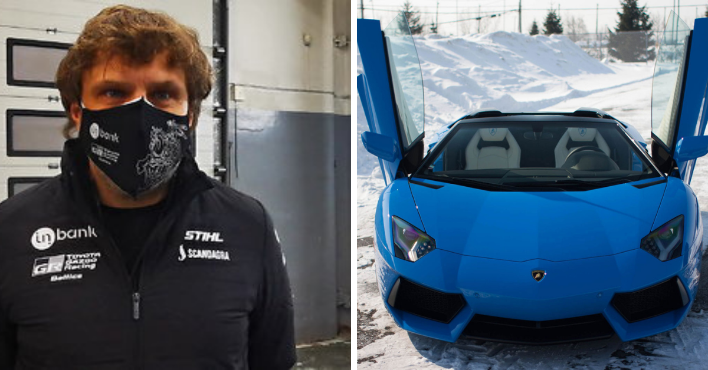

KAIMO TURIZMO VEIKLOS TYRIMO METODINIS PAGRINDIMAS

Per pastaruosius 15 metų kaimo turizmo verslas Lietuvoje sparčiai augo ir plėtėsi buvo
įkurta daug modernių, aukštos kokybės paslaugas teikiančių sodybų. Tačiau to augimo kryptis -
„pobūvių turizmas“. Vieni tai įvardiją, kaip problemą, kiti numato kaimo turizmo Lietuvoje
išnykimą. Sodybų šeimininkams pobūvių organizavimas reiškia papildomas pajamas leidžiančias
labiau plėtoti veiklą. Siekiant įvertinti kaimo turizmo plėtros perspektyvas buvo atliktas kaimo
turizmo veiklos ir paslaugų pasiūlos tyrimas, apklausiant kaimo turizmo paslaugų teikėjus. Šio
tyrimo tikslas - atskleisti kaimo turizmo paslaugų pasiūlos pokyčius.
Tyrimo objektas – kaimo turizmo veikla.
Tyrimo respondentai: kaimo turizmo sodybų savininkai, vadovai ar vadybininkai.
Tyrimo lygis: Šalis.
Kaimo turizmo paslaugų tyrimas yra atliktas 2 kartus: 2004 ir 2011 metais.
Tiriamoji visuma buvo parinkta remiantis Valstybinio turizmo departamento, Lietuvos
kaimo turizmo asociacijos, interaktyvaus Lietuvos turizmo įmonių katalogo
„www.viskasturizmui.lt“, specializuotų paieškos internetinių svetainių „www.sodyboskaime.lt“ bei
„www.kaimai.lt“ pateikiamais duomenimis apie veikiančias kaimo turizmo sodybas. Pasirinktas
tyrimo instrumentas – interaktyvi anketinė apklausa, apie kurią kaimo turizmo sodybų
administratoriai buvo supažindinti išsiunčiant informaciją elektroniniu paštu. Tyrimas vyko 2012 m.
sausio mėnesį, internetinėje svetainėje www.publika.lt.
Abu tyrimai vyko sekančiu nuoseklumu:
Pasiruošimo tyrimui etapas. Šiuo etapu buvo studijuojama mokslinė literatūra,
analizuojamos esamos kaimo turizmo būklės susiklostymo priežastys ir galimos tolimesnės
pasekmės, iškeliamas tyrimo tikslas, suformuluojami uždaviniai, apgalvojamas ir sukuriamas tyrimo
instrumentas (apklausos anketa (žr. 2 priedas), duomenų analizės metodai.
Tyrimo proceso organizavimo etapas. Vykdoma tiriamųjų atranka. Tiriamoji visuma
parinkta remiantis specializuotų internetinių paieškos svetainių duomenimis. Tyrime dalyvavusios
kaimo turizmo sodybos pasirinktos netikimybinės atsitiktinės atrankos ir parankumo principu.
Empirinių duomenų rinkimo etapas. Anketa patalpinama internetinėje svetainėje
www.publika.lt. Tiriamoji visuma supažindinama su atliekamu tyrimu, išsiunčiant informaciją, su
27
nuoroda į klausimyną, elektroniniu paštu. Vyksta interaktyvus tyrimo duomenų rinkimas bei
bendradarbiavimas su respondentais.
Tyrimo duomenų apdorojimo etapas. Surinkti tyrimo duomenys tikslinami ir analizuojami
statistikai, naudojant matematinę analizę. Gauta informacija sistemingai ir tikslingai apdorojama bei
aptariama, atskleidžiant Lietuvos kaimo turizmo paslaugų struktūrą, jos pokyčius bei verslo plėtros
tendencijas.
Tyrime buvo naudojami sekantys metodai:
Mokslinės literatūros analizė – atlikta siekiant apibendrinti kaimo turizmo raidos etapus,
išanalizuoti kaimo turizmo verslo aplinką, identifikuoti kaimo turizmo veiklos pokyčius ir juos
lėmusius veiksnius.
Anketinė apklausa. Tyrimui atlikti buvo pasirinkta anketinė apklausa, nes tai yra efektyvus
tyrimo metodas, naudojamas siekiant surinkti tam tikro pobūdžio informaciją apie tiriamąją
problemą. Šiuo metodu surinkta informacija tiesiogiai susijusi su tyrimo tikslu, pats rinkimo
procesas pakankamai pigus ir greitas.
Šis tyrimas buvo vykdomas siekiant įvertinti esamą kaimo turizmo būklę, išsiaiškinti
paslaugų stuktūros pokyčius bei prognozuoti šio verslo ateities perspektyvas. Klausimynas buvo
sudarytas iš 25 klausimų vadovaujantis K. Kardelio (2007), V. Rudzinskienės (2005) ir E. Bagdono
(2009) mokomąja medžiaga (žr. 2 priedas).
Klausimų klasifikaciją pagal suteikiamą informaciją pateiktą 3 lentelėje.
3 lentelė. Anketos klausimų klasifikacija pagal informacijos pobūdį
Klausimų pobūdis Klausimų numeriai
Bendra informacija apie respondentą 1, 2, 3
Bendra informacija apie kaimo turizmo sodybą 4, 5, 6, 7, 8, 9, 10, 11
Informacija apie kaimo turizmo paslaugas 12, 13, 14, 15
Rinkodaros priemonių naudojimas 17, 18, 22, 23, 25
Plėtros perspektyvas atspindintys veiksniai 16, 19, 20, 21, 24
Tam, kad minimizuoti anketos apimtį bei gauti tikslius ir konkrečius atsakymus atviri
klausimai buvo sudaromi taip, kad reikalautų tik vieno žodžio ar skaičiaus atsakymo. Prie atvirų
klausimų priskiriami 1, 4, 6, 8, 9, 10, 13, 14 ir 17 klausimai. Visi kiti klausimai buvo uždari,
daugiavariančiai, kurių atsakymų matavimams buvo naudojamos sekančios skalės:
Nominalinė skalė - 2, 3, 5, 7, 15, 18 ir 21 klausimų atsakymams;
28
Ranginė 5 balų skalė - 16 klausimo atsakymams apie plėtrą ribojančius veiksnius (nuo 5 =
labai riboja iki 1 = visai neriboja), 24 ir 25 klausimų atsakymams (nuo 5 = labai svarbu iki 1 = visai
nesvarbu);
Intervalinė skalė – 19 ir 22 klausimų atsakymams (19 klausimui apie pajamų pasiskirstymą
konkrečiais metais – matricinė intervalinė skalę).
Statistinės analizės metodai. Tyrimo rezultatų analizei buvo naudojami aprašomosios
statistikos metodai, kai kiekvienas kintamasis nagrinėjamas atskirai bei ryšių analizė, kai nustatomas
kintamųjų tarpusavio ryšys. Pasitelkiant Microsoft Excel programą duomenys buvo rūšiuojami,
grupuojami, analizuojami modeliuojant grafikus, apskaičiuojami apibendrinantys rodikliai bei
aptariami gauti rezultatai.
2.2. Tyrimo imtis ir charakteristika
Renkant duomenis, visuomet reikia ištirti tam tikrų objektų ar individų grupę, kuri
statistikoje vadinama statistine visuma, generaline aibe arba populiacija. Dalis populiacijos objektų
arba individų, apie kuriuos renkame mus dominančius duomenis, vadinami imtimi (Bilevičienė,
2011).
Imties dydžio nustatymas yra vienas iš svarbiausių tyrimo projekto uždavinių, kartu ir vienas
iš sudėtingiausių. Pirma reikia apibrėžti populiaciją. Antra, reikia išspręsti daug problemų: turimas
tyrimo finansavimas gali turėti lemiamą įtaką imties dydžiui; imties dydis priklauso nuo numatomos
analizės tipo; nuo norimo pasiekti įvertinimo tikslumo; nuo tiriamų kintamųjų skaičiaus; nuo
tiriamos populiacijos vienalytiškumo (Bilevičienė, 2011).
2004 metais buvo atliktas kaimo turizmo veiklos tyrimas, kurį būtų galima pavadinti
bandomuoju ir tuo pačiu palyginamuoju. Šis tyrimas leido patobulinti 2011 metais atliktą tyrimą bei
jo instrumentą, o palyginus gautus duomenis atsiskleidė tam tikri kaimo turizmo verslo pokyčiai.
Žvalgybinio kaimo turizmo veiklos tyrimo imties apskaičiavimui buvo panaudota sekanti formulė:
Šis atvejis gana dažnas ypač tada, kai daromas bandomasis tyrimas. Pakanka žinoti
populiacijos dydį ir norimą gauti paklaidą. (Bagdonas, 2009).
Atlikus skaičiavimus buvo gauta imtis, n= 10 reprezentuojanti 315 kaimo turizmo sodybų
populiaciją (Lietuvos Statistikos departamento duomenys) su 90 proc. patikimumu ir ± 10 proc.
paklaida (Imties dydžio apskaičiavimas pateikiamas 1 priede).
Tuo tarpu 2011 metų atliekamo tyrimo populiacijos apibrėžimui buvo pasitelkta keletas
informacijos šaltinių, tam, kad būtų nustatyta kuo tikslesnė imtis. Lietuvos Statistikos departamento
duomenimis, 2011 m. Lietuvoje buvo 615 veikiančių kaimo turizmo sodybų, tačiau remiantis kaimo
turizmo sodybų paieškos internetinių svetainių: www.atostogoskaime.lt, www.viskasturizmui.lt,
www.sodyboskaime.lt,www.kaimai.lt ir www.travel.ltduomenimis buvo gautas 848 sodybų sąrašas.
Todėl generalinė visuma parinkta pagal didesnę reikšmę, t.y. 848 kaimo turizmo sodybos.
Imties dydis tyrimui apskaičiuotas pagal Schwarze formulę
p / q - tiriamojo pažymio pasirodymo/nepasirodymo tikimybė (buvo imama blogiausio
varianto tikimybė, t.y. 50 proc. tuomet p=q=0,5);
ε – pageidautinas tikslumas, šiuo atveju ε = 0,1 (10 proc.);
reikšmė 1,64 atitinka standartizuoto normaliojo skirstinio 90 proc. pasikliovimo lygmenį.
Taigi, atlikus skaičiavimus buvo gautas imties tūris n= 62užtikrinantis, kad 62 kaimo
turizmo sodybų apklausos analizė atspindės visą atrankinę visumą (N= 848) su 90 proc. patikimumu
ir ± 10 proc. atrankos paklaidos riba (Imties dydžio apskaičiavimas pateikiamas 1 priede).
Socialiniuose ir rinkos tyrimuose paprastai taikomas 95 rečiau 90 procentų patikimumo
(pasikliovimo) lygmuo (Bilevičienė, 2011).
Tiriamos grupės dydis priklauso nuo tiriamo tikslo ir tiriamos populiacijos savybių, t.y. nuo
jos dydžio ir vienalytiškumo tiriamojo požymio atžvilgiu (Kardelis, 2007).
Šiuo atveju tiriamųjų objektų vienalytiškumas vienodas, todėl galima daryti išvadą, kad
tokiai populiacijai pakankama ir mažesnė tiriamųjų grupė, o taip pat, galima teigti, kad 90 proc.
patikimumas yra pakankamas reprezentuoti generalinei visumai.
30
Siekiant maksimalaus efektyvumo, tyrimas buvo vykdomas šalies mastu ir apie jį buvo
informuota 84,3 proc. tiriamos populiacijos. Informacija apie atliekamą tyrimą ir nuorodą į
interaktyvią anketinę apklausą buvo išsiųsta elektroniniu paštu, taigi į respondentų atranką pateko
tik tos kaimo turizmo sodybos, kurios turėjo elektroninį pašto adresą. Todėl, galima teigti, kad buvo
vykdomas netikimybinis atsitiktinis tiriamosios grupės parinkimo būdas, arba, kitaip tariant, imtis
buvo paranki, netikimybinė, kai apklausiami lengvai pasiekiami asmenys. Šis imties sudarymo
būdas buvo pasirinktas pagal patogumo, paprastumo principus bei finansines galimybes.
Informacija apie apklausą buvo išsiųsta 715 adresatų, iš kurių:
• 55 adresatų informacija nepasiekė;
• 341 adresatas susidomėjo ir apsilankė anketoje;
• 89 atsakė į anketoje pateiktus klausimus.
Taigi tyrime dalyvavo 89 respondentai, t.y. 10,5 proc. tiriamos visumos, ir tai pakankamas
skaičius tyrimo imties reprezentatyvumo su 90 proc. patikimumo lygmeniu užtikrinimui.
2.3. Respondentų ir tiriamųjų objektų charakteristika
Atliekant kaimo turizmo paslaugų tyrimą susidarė nuomonė, kad jos teikėjai yra verslininkai,
siekiantys ne „vienadienės“ materialinės naudos, bet globaliai galvojantys apie kaimo turizmo veiklą
bei jo problemas šalies mastu. Tą parodo ir stebėtinai aukštas kaimo turizmo verslininkų
išsilavinimo rodiklis, net 70 apklaustųjų, kas sudaro 79 proc., turi aukštąjį išsilavinimą, 13 proc. –
aukštesnįjį ir 8 proc. – profesinį. Respondentų amžiaus vidurkis 45 metai. Jauniausias 22 metų, o
vyriausias 68 metų amžiaus. Tarp apklausoje dalyvavusių respondentų buvo 79 kaimo turizmo
sodybų savininkai (88,8 proc.) ir 10 samdomų darbuotojų (11,2 proc.). Tačiau net 47,2 proc.
respondentų kaimo turizmo veikla yra tik papildomas pajamų šaltinis sudarantis mažiau nei 50 proc.
jų gaunamų pajamų. Kaimo turizmą, kaip vienintelį pajamų šaltinį įvardijo 20 respondentų ir tai
sudaro 22,5 proc. bendro rodiklio. Tuo tarpu, 2005 metų tyrimas rodo, kad 100 proc. respondentų
kaimo turizmas buvo papildoma veikla.
Apibūdinant 2004 metais atlikto tyrimo respondentus, galima pasakyti, jog absoliuti
dauguma buvo aukštąjį išsilavinimą turinys (90 proc. respondentų) vidutiniškai 45 metų amžiaus
asmenys. Pagal amžiaus ir išsilavinimo kriterijus abiejų tyrimų respondentai yra homogeniški.
Tiriamieji objektai pagal gautus apklausos rezultatus buvo apibūdinti pagal: geografinę vietą,
įsisteigimo laikotarpius, komfortiškumo lygį, vietų skaičių bei specializaciją.
31
Apklausoje dalyvavusių sodybų išsidėstymas pagal geografinę padėtį atitinką realų kaimo
turizmo objektų pasiskirstymą apskrityse.
Atliktas tyrimas rodo, jog kaimo turizmo versle didėja pajamos, gėrėja paslaugų kokybė
pagal klientų poreikius, keičiasi personalo struktūra. Tačiau nėra segmentuojami paslaugų vartotojai,
nes pastebima menka paslaugų diferenciacija tarp skirtingas pajamas generuojančių bei skirtingo
komfortiškumo sodybų. Siekiant išlikti konkurencinės rinkos sąlygomis kaimo turizmo paslaugų
teikėjai turėtų didesnį dėmesį skirti išteklių įvertinimui, paslaugų diferencijavimui ir pozicionavimui
bei tikslinės rinkos segmentavimui. Šiuo atveju būtina atlikti rinkodaros komplekso elementų
vertinimą.
Tikslinga rinkodara paslaugų rinkoje gali būti itin efektyvi priemonė lemianti ne tik
finansinę įmonės sėkmę bet ir konkurencinį pranašumą. Lietuvos kaimo turizmo paslaugų rinkoje
nėra aršios konkurencijos, kadangi verslo subjektai nėra profesionalios įmonės. Kaimo turizmas
dažniausiai yra šeimyninis verslas, kuriame pagrindinė darbo jėga yra šeimos nariai, dažnai
stokojantys žinių apie paslaugų rinkodaros ypatumus ar rinkos dėsnius. Juo labiau, kad kaimo
turizmas yra dažniau ne pagrindinė, o papildoma veikla. Tai rodo ir tyrimo rezultatai: 47,2 proc.
respondentų įvardija tai, kaip papildomą pajamų šaltinį, 27 proc. apklaustųjų tai yra pagrindinė
veikla, ir tik 22,5 proc. – vienintelis pajamų šaltinis. Todėl galima teigti, kad šios veiklos rinkodarai
skiriamas nepakankamas dėmesys.
Anot A. Gargaso ir K. Ramanausko (2006), vis sparčiau augantis kaimo turizmas tampa
rimtu konkurentu kurortams ir viešbučiams bei sąlyginai nebrangia alternatyva poilsiautojams. Šioje
poilsio paslaugų rinkoje tenka susidurti su rimta konkurencija, todėl kaimo turizmo paslaugas
teikiančios įmonės priverstos ieškoti naujų sprendimų tobulinant rinkodaros priemones.
Įsitraukimas į visuotinę konkurencija rodo ir rinkos užpildymo lygį, bei verčia visus
rekreacinių paslaugų rinkos dalyvius siekti konkurencinio pranašumo kuriant naujas patrauklias
paslaugas, gerinant esamų kokybę, aplinką bei investuojant į poilsiautojų pritraukimą.
39
Todėl norint prognozuoti kaimo turizmo verslo plėtrą būtina įvertinti ir kaimo turizmo
paslaugų teikėjų indėlį į rinkodarą.
Analizuojant kaimo turizmo paslaugas, verta paminėti, kad jų kaip galutinio produkto
pateikimas pirkėjui vadinamas paslaugų paketu. Bendrai, tai yra paslaugų visuma, kuri padidina
pagrindinės paslaugos vertę.
Kaimo turizmo paslaugos teikimo procesas susietas su paslaugos paketo stuktūra. Planuojant
kaimo turizmo paslaugos procesą, pirmiausia reikia iškirti dėmesio centrus, suskirstyti paslaugų
paketą į pagrindines (vykdomąsias) ir papildomas (dispozicines) paslaugas. (Astromskienė, 2007)
Prie pagrindinių paslaugų dažniausiai priskiriamos apgyvendinimo ir maitinimo paslaugos, o prie
papildomų – rekreacinės paslaugos.
Kaimo turizmo paslaugų klasifikavimui aktualus ir L. Bagdonienės (2005) siūlomas
paslaugų skirstymas į galutinio ir tarpinio vartojimo, kuris naudingas tuo, kad padeda teisingai
apibrėžti konkurentų ratą, išsiaiškinti pirkimo nuostatas, motyvus ir vartojimo pokyčius.
Atlikto tyrimo rezultatai parodė, kad dažniausios sodybų paslaugos yra pirtis (87,5 proc.) ir
apgyvendinimas (86,4 proc.) (žr. 14 pav.). Analoginius rezultatus parodė ir ankstesnis tyrimas. Tuo
metu 80 proc. sodybų teikė apgyvendinimo ir 50 proc. pirties paslaugas.Apibendrinant, galima teigti, jog didžiausios pajamos gaunamos iš pobūvių ar konferencijų
organizavimo, apgyvendinimo ir maitinimo paslaugų. Vidutines ir mažas pajamas gaunančios
sodybos labiau specializuojasi į rekreacines paslaugas.
Optimistinę nuomonę, kad pajamos vidutiniškai augs turi 33,7 proc. respondentų, kad išliks
nepakitę turi 40,4 proc., nuomonę, kad pajamos mažės išsakė 22,5 proc. apklaustųjų (žr. 3 priedo, 24
lentelę). Tuo tarpu, pagal ankstesnį tyrimą vyravo, tik optimistinė nuomonė: vidutinį pajamų augimą
prognozavo 50 proc., o pajamų nepakitimą 40 proc. respondentų (žr. 4 priedo, 50 lentelę).
Analizuojant skirtingas pajamas gaunančių sodybų atstovų nuomonę buvo pastebėta, jog labiausiai
išsiskyrė mažiausias ir didžiausias pajamas atstovaujančiųjų respondentų nuomonės (žr. 12 pav.).
Apie mažėjančias apimtis galvoja iki 15 tūkst. litų pajamų gaunančių įmonių atstovai (10,6 proc.
apklaustųjų nurodžiusių pajamas), tuo tarpu, daugiau nei 60 tūkst. litų pajamomis disponuojančios
sodybos (10,6 proc. apklaustųjų nurodžiusių pajamas) prognozuoja vidutinį augimą.Didžiausias yra ir šių paslaugų planuojamas pasiūlos augimas, atitinkamai 29,5 ir 28,4 proc..
Akivaizdžiai pasistebi pobūvių teikimo paslaugos atsiradimas, kurios dar pagal 2004 metų apklausos
duomenis nebuvo. Šiuo metu net 67 proc., sodybų siūlo šią paslaugą ir 20,5 proc. planuoja ją teikti
ateityje. Su pobūvių organizavimu glaudžiai susijusi maitinimo paslauga, kurią teikia 44,3 proc.
sodybų taipogi turi nemažą augimo potencialą, ją planuoja teikti 27,3 proc. apklaustųjų. Rekreacinių
paslaugų pasiūloje populiariausia žvejyba (56,8 proc.) ir vandens sportas (36,4 proc.) su 19,3 proc.
planuojamu augimu.
Apibendrinant, galima teigti, jog pagrindinės kaimo turizmo sodybose yra pirties ir
apgyvendinimo paslaugos. Maitinimo paslauga, taipogi turėtų būti priskiriama prie pagrindinių,
tačiau šioje rinkoje ji yra pakankamai nauja ir numatoma plėtoti. Tarp papildomų paslaugų
populiariausios yra pobūvių organizavimas, žvejyba, konferencijų organizavimas ir kubilas. Be šių
paslaugų labiausiai numatomos teikti vandens sporto pramogos.
Galutinio vartojimo paslauga sąlygoja tarpinių arba ją lydinčių paslaugų vartojimą. Kaimo
turizme pastaruoju metu dažnai pobūvių ar konferencijų organizavimo paslauga inicijuoja ne tik
pagrindinių paslaugų teikimą, bet ir maitinimo bei tam tikrų grupinių rekreacinių paslaugų pasiūlą.
Tuo tarpu, analizuojant kaimo turizmo paslaugų paklausą, pasitvirtina išsakyta nuomonė apie
pasiūlą. Respondentų teigimų, pobūviai yra paklausiausia paslauga (37,2 proc.), o sodybose,
kuriuose ji nėra teikiama yra pageidaujama.Tarp dažniausiai perkamų paslaugų yra apgyvendinimas (20,9 proc.), naudojimasis pirties ar
kubilo malonumais (16,3 proc.), bei aktyvios pramogos (12,8 proc.), tokios kaip jodinėjimas
arkliais, tenisas, dažasvydis, pasivažinėjimas keturračiais ir kitos pramogos.
Paslaugos, kurių teiraujasi klientai, gali būti apibūdinamas, kaip galutinio vartojimo
produktas, lemiantis pirkėjo apsisprendimą. Apklausos duomenimis tokios paslaugos yra:
maitinimas (27 proc.), aktyvios pramogos (27 proc.), pirtis ar kubilas (24,3 proc.) bei pobūviai (10,8
proc.) (žr. 15 pav.). Kaimo turizmo sodybų šeimininkai turėtų įvertinti poilsiautojų poreikius
formuojant paslaugų paketą, nes tai yra viena iš pagrindinių sėkmingos kaimo turizmo plėtros
prielaidų.
Pasak Astromskienės (2007), kliento pasitenkinimą kaimo turizmo paslaugomis nulemia
bendravimas ir kiti emociniai procesai. Todėl sodybų šeimininkų dalyvavimas paslaugų teikime yra
itin svarbus gerinant jų kokybę.
Kaimo turizmo paslaugų kokybė – tai paslaugos vartotojo suvokiamas naudingumas, kuris
sukuriamas paslaugos teikėjo pastangomis naudojant įvairias komunikacijos ir rėmimo priemones.
(Ramanauskienė, 2007)
Apklausos duomenimis sodybų šeimininkai didžiausią dėmesį skiria malonios bendravimo
atmosferos kūrimui (41,4 proc.) bei inventoriaus atnaujinimui (40,8 proc.) (žr. 16 pav.). Tačiau
ganėtinai mažas dėmesys skiriamas personalo kvalifikacijos kėlimui.Tokį kainos šuolį lėmė šios paslaugos kokybės išvystymas, nes ši paslauga buvo 2004 metais
pakankamai nauja rinkoje. Tuo tarpu, apgyvendinimo paslaugų kainos vienam žmogui, išaugo
nežymiai, 1,5 karto. Tačiau gerokai pasikeitė vidutinė visos sodybos užsakymo kaina. Jeigu 2004
metų duomenimis vidutinė sodybos nuomos kaina buvo 428,6 Lt, tai 2011 metais – 2079,06 Lt. Tam
žymiai turėjo įtakos sodybų vietų skaičiaus didėjimas.
Iš kainų pasikeitimo galima spręsti ir apie paslaugų kokybės bei infrastruktūros pagerėjimą.
Ryškesni pokyčiai matomi žiemos sporto inventoriaus nuomoje (3,9 karto), žygių ar ekskursijų
organizavime (3,3 karto) bei maitinimo paslaugoje (2,5 karto) (žr. 17 pav.).
Kalbant apie kainų pokyčius būtina atsižvelgti ir bendrą ekonominę situaciją bei pokyčius
rinkoje. Lyginant 2011 metų suderintus vartotojų kainų indeksus (SVKI) su baziniu laikotarpiu
43
(2004 metai) buvo pastebėta, kad poilsio ir sporto paslaugų kainos išaugo 33,3 proc., maisto tiekimo
paslaugų kainos padidėjo 43,5 proc., tuo tarpu, apgyvendinimo paslaugų kainos sumažėjo 9,2 proc.
Šie kainų pokyčiai rodo bendros rinkos svyravimus, tad lyginant kaimo turizmo paslaugų kainas
galima daryti išvada, jog bendroje rinkoje jos didėjo, todėl, galima teigti, kad auga kaimo turizmo
paslaugų paklausa.
Atlikto tyrimo duomenimis vidutinė sodybos nuomos kaina yra 2079 litai, tuo tarpu, vidutinė
apgyvendinimo kaina vienam asmeniui yra 48,75 litai. Kitų paslaugų kainos pateikiamos 3 priedo,
20 lentelėje. Analizuojant skirtingo komfortiškumo sodybų nuomos kainas pastebėta, kainos
didėjimo tendencija, tačiau gana neproporcinga.
Konkurencinio pranašumo bei įvaizdžio formavimo priemonių analizė parodo kaimo turizmo
rėmimo strategijos kryptį ir tikslus. Jeigu anksčiau, 2004 metais, didesnis dėmesys buvo skiriamas
gamtiniams ištekliams bei paslaugų įvairovei, tai šiuo metu sodybos labiau orientuojasi į fizinės
aplinkos bei paslaugų infrastruktūros gerinimą. Šiuos pasikeitimus sąlygoją paklausos tendencijos.
Apibendrinant kaimo turizmo paslaugų rinkodaros priemones galima daryti išvadą, kad verslo
subjektų diferencijavimo sistema nepakankamai atspindi kokybės pozicionavimo kriterijų. Turėtų
būti ne tik kokybinis sodybų suskirstymas, bet ir specializacinis (pvz. pagal rekreacines paslaugas,
pagal gamtinius išteklius ar vietą, pagal paslaugų pobūdį, pagal vartojimo motyvus). Tai įvestų
aiškumo tiek klientams, tiek pačioms sodyboms, ir jos galėtų labiau koncentruotis į veiklą, kurioje
efektyviausiai būtų naudojami sodybų ištekliai bei tikslinga rinkodara.
Tos pačios kaimo turizmo sodybos paslaugų pirkimas dažniausiai yra retai pasikartojantis
procesas, todėl naujų klientų pritraukimui turi būti dedamos didelės pastangos ir investicijos.
50
Efektyviam paslaugų pardavimui tikslinga būtų kooperacija kuriant ir įgyvendinant bendrą rėmimo
strategiją.
Bendrąją prasme tikslinga įvertinti ir kaimo turizmo paslaugų gyvavimo ciklo etapą, nuo kurio
priklauso ir bendra rinkodaros strategija. Sprendžiant pagal pajamų, kainų ir kitų rodiklių augimą,
kaimo turizmas yra augimo stadijoje. Šioje stadijoje turėtų būti intensyvinamas paskirstymas ir
naudojamos masinės reklamos priemones.
Tačiau dauguma kaimo turizmo sodybų yra gana konservatyvios reklamos atžvilgiu. Naudoja
daug ir įvairias rėmimo priemones, tačiau su mažomis lėšomis. Konkurencinio pranašumo įgijimui
jie žemai vertina investicijas į reklama (11,5 proc.), tuo tarpu, didžiausia dėmesį skiria paslaugų
kokybės gerinimui per komunikaciją.
Vertinant kaimo turizmo veiklą rinkodaros požiūriu buvo padarytos sekančios išvados:
• Nepakankama kaimo turizmo sodybų ir paslaugų specializacija bei pozicionavimas;
• Konkurencinio pranašumo siekiama gerinat fizinę aplinką ir aptarnavimo kokybę;
• Paslaugų kokybė geriniama per komunikaciją bei fizinę aplinką;
• Neproporcingas kainų pasiskirstymas pagal komfortiškumo lygį;
• Mažas ir neracionalus kaimo turizmo paslaugų rėmio biudžetas;
• Naudojamos tradicinės, reklamos ir asmeninio pardavimo rėmimo priemonės;
• Mažas paskirstymo kanalų naudojimo rodiklis;
• Vartotojų identifikavimo ir segmentavimo trūkumas.
Apibendrinant tyrimo rezultatus galima teigti, jog kaimo turizmas dažniausiai yra papildoma
veikla, kuri labiausiai pradėta vystyti integracijos į ES etape nuo 2000 iki 2006 metų. Pagrindinė
sodybų veikla buvo rekreacinės paslaugos, kuriomis šiuo metu specializuojasi mažiau nei pusę visų
kaimo turizmo sodybų. Didžiausios pajamos gaunamos iš pobūvių bei konferencijų organizavimo
teikiant maitinimo ir apgyvendinimo paslaugas. Tad kaimo turizmo plėtra vyko šių paslaugų
tenkinimo kryptimi, ko pasekoje padidėjo sodybų vietų skaičius (nuo 18,2 iki 41,5 vietos) ir
apgyvendinimo pajėgumų išnaudojimas (nuo 5 iki 9 proc.), o taip pat ir samdomų darbuotojų
santykis. Tiesinė sodybų dydžio ir darbuotojų struktūros priklausomybė nuo komfortiškumo lygio
rodo kiekybinę ir kokybinę kaimo turizmo sodybų plėtrą.
51
3.2. Kaimo turizmo verslo plėtrą įtakojantys veiksniai ir priemonės
Kaimo turizmo plėtrą, ankstesniuose jo vystymosi etapuose, labiausiai įtakojo ekonominiai ir
politiniai ir vartotojų poreikių paklausos veiksniai. Nepriklausomybės atgavimas paskatino privataus
verslo kūrimąsi, naujų rinkos nišų formavimąsi ir užpildymą. Tuo tarpu, ekonominis augimas
inicijavo poilsio paslaugų paklausos didėjimą, o narytė ES ir jos finansinė parama paskatino kaimo
turizmo verslo plėtrą. Siekiant nustatyti tolimesnes kaimo turizmo plėtros kryptis, būtina išsiaiškinti
kaimo turizmo verslą ribojančius veiksnius.